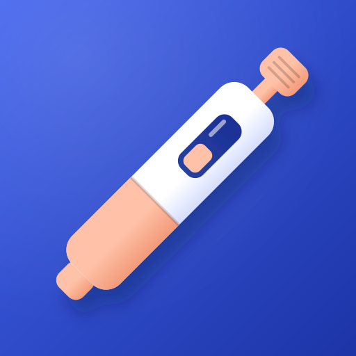

Shot LogShot Log (on the App Store as Peptide Tracker: GLP-1 Shots) is a log for weekly or daily injections: the dose and the site in a few seconds, when the next one is due and where it goes, weight and side effects against your shots, and a report for your prescriber.
Tap Log shot on Today. Your medication, its dose and the next site are filled in; tap Save. To log one you took earlier, tap Earlier in the sheet, or use the plus in History and pick A shot.
Open the Settings tab (the last one at the bottom), then My medications, or tap the medication on Today. Each has a name, a dose as an amount and a unit (mg, mcg, mL or units), a schedule (every few days, or chosen weekdays) and the date of the first shot. One medication is free; Pro keeps several.
Open the medication and tap Change the dose. Type the new dose and the date it starts. The dose history keeps every change with its date, shots already logged keep the dose they were logged with, and the report lists them all. The app never suggests a dose.
Every few days: that many days after your last shot. Chosen weekdays: the next chosen day; a shot taken a day early or late still counts for the chosen day nearest to it. Before your first shot, the first shot date you set.
Tap the site on the body map when you log a shot. The app learns the order you use for each medication and shows the next one. Left and right are your own. If no site is picked, the shot is saved without one.
Turn reminders on when the app asks after your first shot, or later in the Settings tab, where you can also set the time. The notification arrives on the due day; tap and hold it and choose Remind me in an hour to be reminded again. If reminders do not arrive, check Settings, Notifications, Shot Log on your iPhone.
Open Report, choose 30, 90 or 180 days, add your name if you like, and tap Preview the report. With Pro, tap Share PDF or Print. Free users can see the preview, marked SAMPLE.
With Pro, Export CSV in the Report or Settings tab gives one row per shot, weight and side effect.
Yes. In the Settings tab, tap Switch to lifetime: it shows only the lifetime plan, at its App Store price. After you buy it, the app offers Apple's subscriptions page so you can cancel the subscription.
When you come back to the app it checks, and says so in one line: for example "Your plan is now Yearly", or "Your subscription will not renew" after cancelling. Apple sometimes starts a new plan on the next renewal date; the app says so on the first open after it starts.
Lifetime is paid once; Apple keeps billing a weekly or yearly subscription until it is cancelled. The app offers to open Apple's subscriptions page right after the purchase. You can also cancel in Settings, your name, Subscriptions. Pro stays on with lifetime.
In the Settings tab, Restore purchases. Make sure you are signed in with the Apple Account you bought Shot Log Pro with.
No. Shot Log is a personal log. It does not diagnose, treat, calculate doses or give medical advice. Follow your prescriber about your medication and your doses.
Found a bug, or have an idea? Email bkdigitalleads@gmail.com. We read everything.